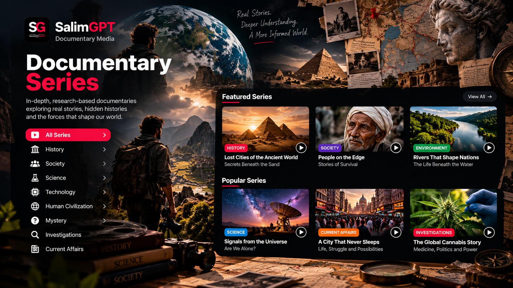

BN
Available
SALIMGPT BENGALI
বাংলা
বাংলা ভাষায় প্রকাশিত ডকুমেন্টারি সিরিজ দেখুন।
ডকুমেন্টারি সিরিজ দেখুন
DISCOVER
Explore connected documentary stories designed to examine a subject across multiple episodes, chapters or related productions.
SalimGPT documentary series are published through individual language editions. Series availability, structure and publishing schedules may vary between editions.
OFFICIAL EDITIONS
Choose an available SalimGPT language edition to explore documentary series published for that audience.
SALIMGPT BENGALI
বাংলা ভাষায় প্রকাশিত ডকুমেন্টারি সিরিজ দেখুন।
SALIMGPT ENGLISH
Explore documentary series published in English.
SALIMGPT HINDI
हिन्दी में प्रकाशित डॉक्यूमेंट्री सीरीज़ देखें।
CONNECTED STORYTELLING
A documentary series provides room to examine different dimensions of a broader subject while keeping related stories connected.
Related documentary parts can develop a subject across multiple stages, events or perspectives.
Series formats can provide more space for chronology, background and supporting context.
Related productions can build on common research, evidence and source frameworks.

SALIMGPT SERIES
A series may connect documentaries through a shared subject, historical sequence, investigation, theme or research direction. Each production can stand within a larger editorial context while addressing its own part of the subject.
Individual SalimGPT language editions determine how their documentary series are presented and published for their audiences.
CONTINUE EXPLORING
Explore the newest documentary releases.
Explore selected documentary work.
Browse the full documentary gateway.
Browse documentary content grouped into collections.
Explore documentary gateways by subject.
Continue into the documentary archive.